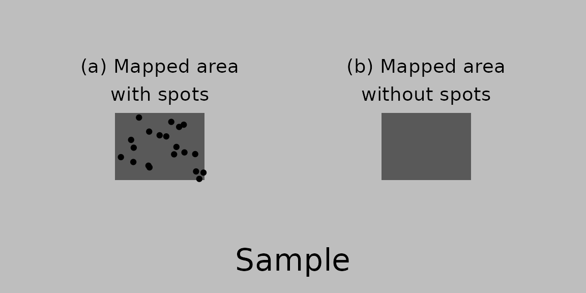

vignettes/parameterize.Rmd
parameterize.RmdThis document introduces a way to quantify X-ray maps without quantitatively analyzed spots by inheriting parameters from a previously quantified X-ray map (See figure below).

qntmap 0.3.2 or laterquantify(saving = TRUE) under qntmap 0.3.2 or later.Suppose available quantified maps are constructed by following “Get started”, centers_initial0.csv is available as well. Read the csv file by following codes.
| phase | Si | Mg |
|---|---|---|
| Ol | 4245.5 | 5726.5 |
| Qtz | 10015.5 | 0.0 |
The above is a example format of initial centers given by sample data introduced in “Get started”. Edit the csv file manually if initial centers require modifications, or if there are any phase abscent in new maps to be quantified.
When available quantified mapes are compsoed by quantify() function, parameters.csv is saved in the qntmap directory within the directory storing X-ray mapping data. Specify a file path of parameters.csv as fix parameter of quantify() function.
Note that qnt paramter is ignored when fix parameter is specified.